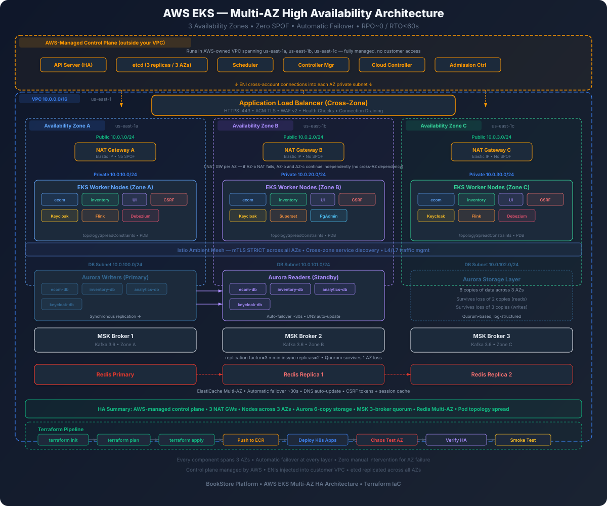

Eliminate single points of failure across every layer of the BookStore Platform with complete Terraform configurations
The BookStore Platform deploys across three AWS Availability Zones in us-east-1 (us-east-1a, us-east-1b, us-east-1c). Each AZ is a physically isolated data center with independent power, cooling, and networking. A single AZ failure leaves two-thirds of the infrastructure operational with zero data loss.

| Component | RPO (Data Loss) | RTO (Recovery Time) | Mechanism |
|---|---|---|---|
| Aurora PostgreSQL | 0 (sync replication) | ~30s (auto failover) | 6-way storage replication across 3 AZs |
| MSK Kafka | 0 (ISR replication) | ~10s (leader election) | Replication factor 3, min.insync.replicas 2 |
| ElastiCache Redis | < 1s (async replication) | ~30s (auto failover) | Multi-AZ replication group |
| EKS Pods | N/A (stateless) | ~15s (rescheduling) | Replicas across AZs, PDB, HPA |
| ALB | N/A | ~0s (built-in) | AWS-managed, spans all AZs automatically |
| NAT Gateway | N/A | ~0s (per-AZ) | One NAT Gateway per AZ, isolated routing |
With a proper Multi-AZ deployment, the following are eliminated as single points of failure:
AWS Region: us-east-1
┌─────────────────────────────────────────────────────────────────────┐
│ Route 53 (DNS) │
│ │ │
│ ┌────────┴────────┐ │
│ │ ALB (Public) │ │
│ │ 3-AZ spanning │ │
│ └──┬──────┬──────┬─┘ │
│ │ │ │ │
│ ┌──────────────────┼──────┼──────┼──────────────────────────┐ │
│ │ VPC: 10.0.0.0/16│ │ │ │ │
│ │ │ │ │ │ │
│ │ ┌───── AZ-a ────┼──────┼──────┼──── AZ-b ─────── AZ-c ──┐│ │
│ │ │ │ │ │ ││ │
│ │ │ Public │ │ │ Public Public ││ │
│ │ │ 10.0.1.0/24 │ │ │ 10.0.2.0/24 10.0.3.0 ││ │
│ │ │ ┌─NAT GW─┐ │ │ │ ┌─NAT GW─┐ ┌NAT GW┐ ││ │
│ │ │ └─────────┘ │ │ │ └─────────┘ └──────┘ ││ │
│ │ │ │ │ │ ││ │
│ │ │ Private │ │ │ Private Private ││ │
│ │ │ 10.0.11.0/24 │ │ │ 10.0.12.0/24 10.0.13 ││ │
│ │ │ ┌──────────┐ │ │ │ ┌──────────┐ ┌──────┐ ││ │
│ │ │ │EKS Nodes │ │ │ │ │EKS Nodes │ │EKS │ ││ │
│ │ │ │┌────────┐│ │ │ │ │┌────────┐│ │Nodes │ ││ │
│ │ │ ││ecom-svc ││ │ │ │ ││ecom-svc││ │ │ ││ │
│ │ │ ││inven-svc││ │ │ │ ││inven-svc│ │ │ ││ │
│ │ │ ││ui-svc ││ │ │ │ ││ui-svc ││ │ ... │ ││ │
│ │ │ ││csrf-svc ││ │ │ │ ││csrf-svc││ │ │ ││ │
│ │ │ │└────────┘│ │ │ │ │└────────┘│ │ │ ││ │
│ │ │ └──────────┘ │ │ │ └──────────┘ └──────┘ ││ │
│ │ │ │ │ │ ││ │
│ │ │ DB Subnet │ │ │ DB Subnet DB Sub ││ │
│ │ │ 10.0.21.0/24 │ │ │ 10.0.22.0/24 10.0.23 ││ │
│ │ │ ┌──────────┐ │ │ │ ┌──────────┐ ││ │
│ │ │ │Aurora │◄├──sync─┤► │ │Aurora │ ││ │
│ │ │ │Writer │ │ │ │ │Reader │ ││ │
│ │ │ └──────────┘ │ │ │ └──────────┘ ││ │
│ │ │ │ │ │ ││ │
│ │ │ ┌──────────┐ │ │ │ ┌──────────┐ ┌──────┐ ││ │
│ │ │ │MSK │◄├─repl──┤► │ │MSK │◄─│MSK │ ││ │
│ │ │ │Broker 1 │ │ │ │ │Broker 2 │ │Brkr 3│ ││ │
│ │ │ └──────────┘ │ │ │ └──────────┘ └──────┘ ││ │
│ │ │ │ │ │ ││ │
│ │ │ ┌──────────┐ │ │ │ ┌──────────┐ ┌──────┐ ││ │
│ │ │ │Redis │◄├─repl──┤► │ │Redis │◄─│Redis │ ││ │
│ │ │ │Primary │ │ │ │ │Replica 1 │ │Repl 2│ ││ │
│ │ │ └──────────┘ │ │ │ └──────────┘ └──────┘ ││ │
│ │ └───────────────┘ │ └──────────────────────────┘│ │
│ └────────────────────────────────────────────────────────────┘ │
└─────────────────────────────────────────────────────────────────────┘Every component runs in at least 2 AZs. If any single AZ is completely destroyed, the platform continues serving traffic with no manual intervention. This applies to networking (NAT Gateways), compute (EKS nodes), storage (Aurora), messaging (MSK), and caching (Redis).
Every stateful service uses AWS-managed automatic failover. Aurora promotes a read replica to writer within 30 seconds. Redis promotes a replica to primary within 30 seconds. MSK elects a new partition leader within 10 seconds. EKS reschedules pods to healthy nodes within 15 seconds. No on-call engineer action is required for any single-AZ failure.
Aurora replicates storage 6 ways across 3 AZs (2 copies per AZ). It can lose an entire AZ and still read data. It can lose 2 copies and still write. MSK replicates every message to 3 brokers before acknowledging the producer. Redis replicates asynchronously but with sub-second lag. No committed data is lost during an AZ failure.
During a failover event, the system degrades gracefully rather than failing catastrophically. Connections to the failed AZ drain over the terminationGracePeriodSeconds window. Circuit breakers (Istio outlierDetection) eject unhealthy endpoints within 10 seconds. Clients retry against healthy replicas automatically.
Health probing happens at four layers: ALB health checks (HTTP), Kubernetes liveness/readiness probes (TCP/HTTP), Aurora enhanced monitoring (CloudWatch), and application-level circuit breakers (Istio). A failure at any layer triggers automatic remediation before the user notices.
The VPC is the foundation of Multi-AZ HA. Every AZ gets its own independent networking stack: public subnet (ALB), private subnet (EKS nodes), database subnet (Aurora/ElastiCache), NAT Gateway, and route table. If AZ-a goes down, AZ-b and AZ-c continue routing traffic independently through their own NAT Gateways.
# variables.tf — Multi-AZ configuration variables
variable "aws_region" {
description = "AWS region for all resources"
type = string
default = "us-east-1"
}
variable "project_name" {
description = "Project name prefix for all resources"
type = string
default = "bookstore"
}
variable "environment" {
description = "Environment name (dev, staging, prod)"
type = string
default = "prod"
}
variable "vpc_cidr" {
description = "CIDR block for the VPC"
type = string
default = "10.0.0.0/16"
}
variable "availability_zones" {
description = "List of 3 availability zones for Multi-AZ deployment"
type = list(string)
default = ["us-east-1a", "us-east-1b", "us-east-1c"]
}
variable "public_subnet_cidrs" {
description = "CIDR blocks for public subnets (one per AZ) — ALB"
type = list(string)
default = ["10.0.1.0/24", "10.0.2.0/24", "10.0.3.0/24"]
}
variable "private_subnet_cidrs" {
description = "CIDR blocks for private subnets (one per AZ) — EKS nodes"
type = list(string)
default = ["10.0.11.0/24", "10.0.12.0/24", "10.0.13.0/24"]
}
variable "database_subnet_cidrs" {
description = "CIDR blocks for database subnets (one per AZ) — Aurora, ElastiCache"
type = list(string)
default = ["10.0.21.0/24", "10.0.22.0/24", "10.0.23.0/24"]
}
# Tags required by EKS for ALB controller subnet discovery
locals {
common_tags = {
Project = var.project_name
Environment = var.environment
ManagedBy = "terraform"
}
}# vpc.tf — VPC with DNS support enabled for Aurora endpoints
resource "aws_vpc" "main" {
cidr_block = var.vpc_cidr
# DNS hostnames required for Aurora cluster endpoints
# and EKS API server private endpoint resolution
enable_dns_support = true
enable_dns_hostnames = true
tags = merge(local.common_tags, {
Name = "${var.project_name}-${var.environment}-vpc"
})
}
# Internet Gateway — single resource, but AWS manages it
# redundantly across all AZs. Not a SPOF.
resource "aws_internet_gateway" "main" {
vpc_id = aws_vpc.main.id
tags = merge(local.common_tags, {
Name = "${var.project_name}-${var.environment}-igw"
})
}# subnets-public.tf — Public subnets for ALB ingress
# ALB requires subnets in at least 2 AZs; we use 3 for full HA.
resource "aws_subnet" "public" {
count = length(var.availability_zones)
vpc_id = aws_vpc.main.id
cidr_block = var.public_subnet_cidrs[count.index]
availability_zone = var.availability_zones[count.index]
# ALB nodes get public IPs automatically
map_public_ip_on_launch = true
tags = merge(local.common_tags, {
Name = "${var.project_name}-${var.environment}-public-${var.availability_zones[count.index]}"
# These tags tell the AWS Load Balancer Controller
# which subnets to place internet-facing ALBs in
"kubernetes.io/role/elb" = "1"
"kubernetes.io/cluster/${var.project_name}-${var.environment}" = "shared"
})
}
# Public route table — routes to Internet Gateway
resource "aws_route_table" "public" {
vpc_id = aws_vpc.main.id
route {
cidr_block = "0.0.0.0/0"
gateway_id = aws_internet_gateway.main.id
}
tags = merge(local.common_tags, {
Name = "${var.project_name}-${var.environment}-public-rt"
})
}
# Associate every public subnet with the public route table
resource "aws_route_table_association" "public" {
count = length(var.availability_zones)
subnet_id = aws_subnet.public[count.index].id
route_table_id = aws_route_table.public.id
}# subnets-private.tf — Private subnets for EKS worker nodes
# No public IPs. Egress via per-AZ NAT Gateway.
resource "aws_subnet" "private" {
count = length(var.availability_zones)
vpc_id = aws_vpc.main.id
cidr_block = var.private_subnet_cidrs[count.index]
availability_zone = var.availability_zones[count.index]
tags = merge(local.common_tags, {
Name = "${var.project_name}-${var.environment}-private-${var.availability_zones[count.index]}"
# Tells ALB Controller these subnets are for internal ALBs
"kubernetes.io/role/internal-elb" = "1"
"kubernetes.io/cluster/${var.project_name}-${var.environment}" = "shared"
})
}# subnets-database.tf — Isolated subnets for managed databases
# These subnets have no NAT Gateway route — databases do not
# need internet access. This is a security best practice.
resource "aws_subnet" "database" {
count = length(var.availability_zones)
vpc_id = aws_vpc.main.id
cidr_block = var.database_subnet_cidrs[count.index]
availability_zone = var.availability_zones[count.index]
tags = merge(local.common_tags, {
Name = "${var.project_name}-${var.environment}-db-${var.availability_zones[count.index]}"
})
}
# Aurora DB subnet group — tells Aurora which subnets to use
# Aurora will place the writer in one AZ and reader(s) in others
resource "aws_db_subnet_group" "aurora" {
name = "${var.project_name}-${var.environment}-aurora"
subnet_ids = aws_subnet.database[*].id
tags = merge(local.common_tags, {
Name = "${var.project_name}-${var.environment}-aurora-subnet-group"
})
}
# ElastiCache subnet group — tells Redis which subnets to use
resource "aws_elasticache_subnet_group" "redis" {
name = "${var.project_name}-${var.environment}-redis"
subnet_ids = aws_subnet.database[*].id
tags = merge(local.common_tags, {
Name = "${var.project_name}-${var.environment}-redis-subnet-group"
})
}# nat-gateways.tf — One NAT Gateway per AZ
#
# WHY one per AZ (not a single shared NAT)?
# A NAT Gateway is AZ-scoped. If you have ONE NAT GW in AZ-a
# and AZ-a fails, ALL private subnets lose internet egress.
# EKS nodes cannot pull images, pods cannot reach AWS APIs,
# health checks fail, and your entire cluster goes down.
#
# With one NAT GW per AZ:
# - AZ-a fails → AZ-b and AZ-c keep routing through their own NATs
# - Cost: ~$32/mo per NAT GW = $96/mo total (vs $32 for single)
# - The $64/mo difference prevents total cluster outage
# Elastic IPs for NAT Gateways (one per AZ)
resource "aws_eip" "nat" {
count = length(var.availability_zones)
domain = "vpc"
tags = merge(local.common_tags, {
Name = "${var.project_name}-${var.environment}-nat-eip-${var.availability_zones[count.index]}"
})
}
# NAT Gateways — placed in PUBLIC subnets (they need internet access)
resource "aws_nat_gateway" "main" {
count = length(var.availability_zones)
allocation_id = aws_eip.nat[count.index].id
subnet_id = aws_subnet.public[count.index].id
tags = merge(local.common_tags, {
Name = "${var.project_name}-${var.environment}-nat-${var.availability_zones[count.index]}"
})
# NAT Gateway depends on Internet Gateway existing
depends_on = [aws_internet_gateway.main]
}# route-tables-private.tf — Each AZ routes through its own NAT GW
#
# This is what makes per-AZ NAT Gateway work. Each private subnet
# has its OWN route table pointing to its OWN NAT Gateway.
# If AZ-a NAT fails, only AZ-a private subnet is affected.
resource "aws_route_table" "private" {
count = length(var.availability_zones)
vpc_id = aws_vpc.main.id
# Default route goes to THIS AZ's NAT Gateway
route {
cidr_block = "0.0.0.0/0"
nat_gateway_id = aws_nat_gateway.main[count.index].id
}
tags = merge(local.common_tags, {
Name = "${var.project_name}-${var.environment}-private-rt-${var.availability_zones[count.index]}"
})
}
# Associate each private subnet with its AZ-specific route table
resource "aws_route_table_association" "private" {
count = length(var.availability_zones)
subnet_id = aws_subnet.private[count.index].id
route_table_id = aws_route_table.private[count.index].id
}
# Database subnets get their own route table — no internet route
resource "aws_route_table" "database" {
vpc_id = aws_vpc.main.id
# No routes to 0.0.0.0/0 — databases should not reach the internet
tags = merge(local.common_tags, {
Name = "${var.project_name}-${var.environment}-db-rt"
})
}
resource "aws_route_table_association" "database" {
count = length(var.availability_zones)
subnet_id = aws_subnet.database[count.index].id
route_table_id = aws_route_table.database.id
}aws_flow_log resource with traffic_type = "ALL" and a 14-day retention CloudWatch log group.
The EKS control plane is inherently Multi-AZ: AWS runs the Kubernetes API servers and etcd across 3 AZs automatically. You pay for one control plane, and AWS handles its HA. Your responsibility is making the data plane (worker nodes and pods) Multi-AZ.
cluster_endpoint_private_access = true, all kubectl and kubelet traffic stays within the VPC via these ENIs.# eks-cluster.tf — EKS control plane
# The control plane runs across all 3 AZs automatically.
# API server endpoints are behind an NLB managed by AWS.
# etcd is replicated across AZs by AWS.
resource "aws_eks_cluster" "main" {
name = "${var.project_name}-${var.environment}"
role_arn = aws_iam_role.eks_cluster.arn
version = "1.31"
vpc_config {
# Control plane ENIs placed in private subnets across all 3 AZs
subnet_ids = aws_subnet.private[*].id
# Private endpoint: kubectl works from within VPC
# Public endpoint: kubectl works from developer machines
endpoint_private_access = true
endpoint_public_access = true
# Restrict public access to your team's IP ranges
public_access_cidrs = var.allowed_cidr_blocks
security_group_ids = [aws_security_group.eks_cluster.id]
}
# Enable all log types for debugging AZ failover events
enabled_cluster_log_types = [
"api",
"audit",
"authenticator",
"controllerManager",
"scheduler"
]
# Encryption of Kubernetes secrets at rest with KMS
encryption_config {
provider {
key_arn = aws_kms_key.eks.arn
}
resources = ["secrets"]
}
tags = merge(local.common_tags, {
Name = "${var.project_name}-${var.environment}-eks"
})
depends_on = [
aws_iam_role_policy_attachment.eks_cluster_policy,
aws_iam_role_policy_attachment.eks_vpc_resource_controller,
]
}
# KMS key for encrypting Kubernetes secrets at rest
resource "aws_kms_key" "eks" {
description = "EKS secret encryption key for ${var.project_name}-${var.environment}"
deletion_window_in_days = 7
enable_key_rotation = true
tags = local.common_tags
}
# EKS cluster IAM role
resource "aws_iam_role" "eks_cluster" {
name = "${var.project_name}-${var.environment}-eks-cluster"
assume_role_policy = jsonencode({
Version = "2012-10-17"
Statement = [{
Action = "sts:AssumeRole"
Effect = "Allow"
Principal = {
Service = "eks.amazonaws.com"
}
}]
})
tags = local.common_tags
}
resource "aws_iam_role_policy_attachment" "eks_cluster_policy" {
policy_arn = "arn:aws:iam::aws:policy/AmazonEKSClusterPolicy"
role = aws_iam_role.eks_cluster.name
}
resource "aws_iam_role_policy_attachment" "eks_vpc_resource_controller" {
policy_arn = "arn:aws:iam::aws:policy/AmazonEKSVPCResourceController"
role = aws_iam_role.eks_cluster.name
}# eks-node-group-system.tf — System node group for kube-system,
# Istio, cert-manager, CoreDNS, and other cluster components.
#
# Why min_size = 2 (not 3)?
# System pods (CoreDNS, kube-proxy, ztunnel) tolerate running
# 2 replicas. With 2 nodes across 3 AZs, EKS places one node
# in each of 2 AZs. If one AZ fails, one node remains.
# Cost savings: 1 fewer m5.large = ~$70/mo saved.
# For maximum HA, set min_size = 3 (one per AZ).
resource "aws_eks_node_group" "system" {
cluster_name = aws_eks_cluster.main.name
node_group_name = "${var.project_name}-${var.environment}-system"
node_role_arn = aws_iam_role.eks_node.arn
# Spread across all 3 AZs — EKS balances nodes across AZs
subnet_ids = aws_subnet.private[*].id
instance_types = ["m5.large"]
capacity_type = "ON_DEMAND"
scaling_config {
desired_size = 2
min_size = 2
max_size = 4
}
update_config {
# During node updates, only 1 node unavailable at a time
# This ensures at least 1 system node is always running
max_unavailable = 1
}
labels = {
"node-role" = "system"
}
# Taint so only system pods schedule here
taint {
key = "node-role"
value = "system"
effect = "NO_SCHEDULE"
}
tags = merge(local.common_tags, {
Name = "${var.project_name}-${var.environment}-system-nodes"
})
depends_on = [
aws_iam_role_policy_attachment.eks_worker_node_policy,
aws_iam_role_policy_attachment.eks_cni_policy,
aws_iam_role_policy_attachment.eks_container_registry,
]
}# eks-node-group-app.tf — Application node group for BookStore services.
#
# min_size = 3 (one per AZ) ensures every AZ has at least one node.
# max_size = 9 allows HPA to scale up to 3 per AZ under load.
# The Kubernetes scheduler + topology constraints distribute pods.
resource "aws_eks_node_group" "app" {
cluster_name = aws_eks_cluster.main.name
node_group_name = "${var.project_name}-${var.environment}-app"
node_role_arn = aws_iam_role.eks_node.arn
# All 3 AZs — critical for pod topology spread
subnet_ids = aws_subnet.private[*].id
instance_types = ["m5.xlarge"]
capacity_type = "ON_DEMAND"
scaling_config {
desired_size = 3
min_size = 3
max_size = 9
}
update_config {
# During rolling update, max 1 node unavailable
# With 3 nodes, 2 are always running = 2 AZs covered
max_unavailable = 1
}
labels = {
"node-role" = "app"
}
tags = merge(local.common_tags, {
Name = "${var.project_name}-${var.environment}-app-nodes"
})
depends_on = [
aws_iam_role_policy_attachment.eks_worker_node_policy,
aws_iam_role_policy_attachment.eks_cni_policy,
aws_iam_role_policy_attachment.eks_container_registry,
]
}
# Node IAM role — shared by both node groups
resource "aws_iam_role" "eks_node" {
name = "${var.project_name}-${var.environment}-eks-node"
assume_role_policy = jsonencode({
Version = "2012-10-17"
Statement = [{
Action = "sts:AssumeRole"
Effect = "Allow"
Principal = {
Service = "ec2.amazonaws.com"
}
}]
})
tags = local.common_tags
}
resource "aws_iam_role_policy_attachment" "eks_worker_node_policy" {
policy_arn = "arn:aws:iam::aws:policy/AmazonEKSWorkerNodePolicy"
role = aws_iam_role.eks_node.name
}
resource "aws_iam_role_policy_attachment" "eks_cni_policy" {
policy_arn = "arn:aws:iam::aws:policy/AmazonEKS_CNI_Policy"
role = aws_iam_role.eks_node.name
}
resource "aws_iam_role_policy_attachment" "eks_container_registry" {
policy_arn = "arn:aws:iam::aws:policy/AmazonEC2ContainerRegistryReadOnly"
role = aws_iam_role.eks_node.name
}# eks-security-groups.tf — Cluster and node security groups
resource "aws_security_group" "eks_cluster" {
name_prefix = "${var.project_name}-${var.environment}-eks-cluster-"
vpc_id = aws_vpc.main.id
description = "EKS cluster security group"
# Allow nodes to communicate with the control plane
ingress {
from_port = 443
to_port = 443
protocol = "tcp"
security_groups = [aws_security_group.eks_nodes.id]
description = "Node to control plane HTTPS"
}
egress {
from_port = 0
to_port = 0
protocol = "-1"
cidr_blocks = ["0.0.0.0/0"]
description = "Allow all outbound"
}
tags = merge(local.common_tags, {
Name = "${var.project_name}-${var.environment}-eks-cluster-sg"
})
}
resource "aws_security_group" "eks_nodes" {
name_prefix = "${var.project_name}-${var.environment}-eks-nodes-"
vpc_id = aws_vpc.main.id
description = "EKS worker node security group"
# Allow all traffic between nodes (for pod-to-pod communication)
ingress {
from_port = 0
to_port = 0
protocol = "-1"
self = true
description = "Node to node all traffic"
}
# Allow control plane to communicate with nodes
ingress {
from_port = 1025
to_port = 65535
protocol = "tcp"
security_groups = [aws_security_group.eks_cluster.id]
description = "Control plane to node"
}
# Allow ALB health checks
ingress {
from_port = 0
to_port = 0
protocol = "-1"
security_groups = [aws_security_group.alb.id]
description = "ALB to nodes"
}
egress {
from_port = 0
to_port = 0
protocol = "-1"
cidr_blocks = ["0.0.0.0/0"]
description = "Allow all outbound"
}
tags = merge(local.common_tags, {
Name = "${var.project_name}-${var.environment}-eks-nodes-sg"
})
}Aurora PostgreSQL is the most critical HA component. Unlike standard RDS Multi-AZ (which uses block-level replication), Aurora uses a shared distributed storage layer that replicates data 6 ways across 3 AZs (2 copies per AZ). This means:
*-cluster.xxx.rds.amazonaws.com) for writes and the reader endpoint (*-cluster-ro.xxx.rds.amazonaws.com) for reads. Never use individual instance endpoints. During failover, the cluster endpoint DNS resolves to the new writer within seconds.
# aurora-params.tf — Shared parameter group for all Aurora clusters
# wal_level=logical is required for Debezium CDC replication
resource "aws_rds_cluster_parameter_group" "bookstore" {
name = "${var.project_name}-${var.environment}-aurora-pg16"
family = "aurora-postgresql16"
description = "BookStore Aurora PostgreSQL 16 cluster parameters"
# Enable logical replication for Debezium CDC
parameter {
name = "rds.logical_replication"
value = "1"
apply_method = "pending-reboot"
}
# WAL level must be logical for CDC (set by rds.logical_replication)
# This is automatic but we confirm it here
# Shared preload libraries for pg_stat_statements
parameter {
name = "shared_preload_libraries"
value = "pg_stat_statements"
apply_method = "pending-reboot"
}
# Connection pooling params tuned for microservices
parameter {
name = "max_connections"
value = "200"
}
# Log slow queries over 1 second
parameter {
name = "log_min_duration_statement"
value = "1000"
}
tags = local.common_tags
}
# DB instance parameter group (instance-level settings)
resource "aws_db_parameter_group" "bookstore" {
name = "${var.project_name}-${var.environment}-aurora-pg16-instance"
family = "aurora-postgresql16"
description = "BookStore Aurora PostgreSQL 16 instance parameters"
# Performance Insights retention (7 days free tier)
parameter {
name = "performance_insights.enabled"
value = "1"
}
tags = local.common_tags
}# aurora-clusters.tf — One Aurora cluster per service database
# Each cluster has: 1 writer (AZ-a) + 1 reader (AZ-b)
# Aurora storage replicates 6 ways across all 3 AZs automatically
locals {
aurora_databases = {
ecom = {
name = "ecom"
database_name = "ecom"
master_user = "ecom"
}
inventory = {
name = "inventory"
database_name = "inventory"
master_user = "inventory"
}
analytics = {
name = "analytics"
database_name = "analytics"
master_user = "analytics"
}
keycloak = {
name = "keycloak"
database_name = "keycloak"
master_user = "keycloak"
}
}
}
# Aurora cluster — one per database
resource "aws_rds_cluster" "db" {
for_each = local.aurora_databases
cluster_identifier = "${var.project_name}-${var.environment}-${each.value.name}-db"
engine = "aurora-postgresql"
engine_version = "16.4"
database_name = each.value.database_name
master_username = each.value.master_user
# Password managed by AWS Secrets Manager (see below)
manage_master_user_password = true
# Subnet group spans all 3 AZs
db_subnet_group_name = aws_db_subnet_group.aurora.name
# Cluster parameter group with logical replication enabled
db_cluster_parameter_group_name = aws_rds_cluster_parameter_group.bookstore.name
# Security group allowing access from EKS nodes only
vpc_security_group_ids = [aws_security_group.aurora.id]
# Storage encryption at rest with AWS-managed key
storage_encrypted = true
# Backup configuration — 35 days retention for production
# Enables Point-In-Time Recovery (PITR) to any second
backup_retention_period = 35
preferred_backup_window = "03:00-04:00"
# Maintenance window — low-traffic period
preferred_maintenance_window = "sun:04:00-sun:05:00"
# Deletion protection — prevent accidental terraform destroy
deletion_protection = true
# Skip final snapshot only in dev; always take in prod
skip_final_snapshot = false
final_snapshot_identifier = "${var.project_name}-${var.environment}-${each.value.name}-final"
# Enable CloudWatch log exports for audit and debugging
enabled_cloudwatch_logs_exports = ["postgresql"]
# Copy tags to snapshots for cost allocation
copy_tags_to_snapshot = true
tags = merge(local.common_tags, {
Name = "${var.project_name}-${var.environment}-${each.value.name}-db"
Service = each.value.name
Database = each.value.database_name
})
}# aurora-instances.tf — Writer + Reader instances per cluster
#
# Writer: handles all read-write traffic via cluster endpoint
# Reader: handles read-only traffic via reader endpoint
#
# During failover:
# 1. Aurora detects writer failure (~5s)
# 2. Promotes reader to writer (~15-25s)
# 3. Updates cluster endpoint DNS (~5s)
# 4. Total: ~30s automatic recovery
# Writer instance — placed in AZ-a by default
resource "aws_rds_cluster_instance" "writer" {
for_each = local.aurora_databases
identifier = "${var.project_name}-${var.environment}-${each.value.name}-writer"
cluster_identifier = aws_rds_cluster.db[each.key].id
instance_class = "db.r6g.large"
engine = "aurora-postgresql"
engine_version = "16.4"
# Place writer in AZ-a
availability_zone = var.availability_zones[0]
# Instance parameter group
db_parameter_group_name = aws_db_parameter_group.bookstore.name
# Enhanced Monitoring — 60s granularity for detailed OS metrics
monitoring_interval = 60
monitoring_role_arn = aws_iam_role.rds_monitoring.arn
# Performance Insights — 7 days free retention
performance_insights_enabled = true
performance_insights_retention_period = 7
# Auto minor version upgrade during maintenance window
auto_minor_version_upgrade = true
# Promotion priority: 0 = highest (writer should stay writer)
promotion_tier = 0
tags = merge(local.common_tags, {
Name = "${var.project_name}-${var.environment}-${each.value.name}-writer"
Role = "writer"
})
}
# Reader instance — placed in AZ-b for Multi-AZ HA
resource "aws_rds_cluster_instance" "reader" {
for_each = local.aurora_databases
identifier = "${var.project_name}-${var.environment}-${each.value.name}-reader"
cluster_identifier = aws_rds_cluster.db[each.key].id
instance_class = "db.r6g.large"
engine = "aurora-postgresql"
engine_version = "16.4"
# Place reader in AZ-b (different from writer in AZ-a)
availability_zone = var.availability_zones[1]
db_parameter_group_name = aws_db_parameter_group.bookstore.name
monitoring_interval = 60
monitoring_role_arn = aws_iam_role.rds_monitoring.arn
performance_insights_enabled = true
performance_insights_retention_period = 7
auto_minor_version_upgrade = true
# Promotion priority: 1 = first to be promoted on failover
promotion_tier = 1
tags = merge(local.common_tags, {
Name = "${var.project_name}-${var.environment}-${each.value.name}-reader"
Role = "reader"
})
}
# Enhanced Monitoring IAM role
resource "aws_iam_role" "rds_monitoring" {
name = "${var.project_name}-${var.environment}-rds-monitoring"
assume_role_policy = jsonencode({
Version = "2012-10-17"
Statement = [{
Action = "sts:AssumeRole"
Effect = "Allow"
Principal = {
Service = "monitoring.rds.amazonaws.com"
}
}]
})
tags = local.common_tags
}
resource "aws_iam_role_policy_attachment" "rds_monitoring" {
policy_arn = "arn:aws:iam::aws:policy/service-role/AmazonRDSEnhancedMonitoringRole"
role = aws_iam_role.rds_monitoring.name
}# aurora-security-group.tf — Only EKS nodes can reach Aurora
resource "aws_security_group" "aurora" {
name_prefix = "${var.project_name}-${var.environment}-aurora-"
vpc_id = aws_vpc.main.id
description = "Aurora PostgreSQL access from EKS nodes only"
# Allow PostgreSQL connections from EKS nodes only
ingress {
from_port = 5432
to_port = 5432
protocol = "tcp"
security_groups = [aws_security_group.eks_nodes.id]
description = "PostgreSQL from EKS nodes"
}
# No egress restrictions needed for RDS
egress {
from_port = 0
to_port = 0
protocol = "-1"
cidr_blocks = ["0.0.0.0/0"]
description = "Allow all outbound"
}
tags = merge(local.common_tags, {
Name = "${var.project_name}-${var.environment}-aurora-sg"
})
}# aurora-outputs.tf — Connection endpoints for Kubernetes secrets
output "aurora_endpoints" {
description = "Aurora cluster endpoints for each database"
value = {
for key, db in local.aurora_databases : key => {
# USE THIS for writes — auto-resolves to current writer
writer_endpoint = aws_rds_cluster.db[key].endpoint
# USE THIS for read-only queries (load-balanced across readers)
reader_endpoint = aws_rds_cluster.db[key].reader_endpoint
port = aws_rds_cluster.db[key].port
}
}
}
# Store connection info in Kubernetes secrets
# Services use CLUSTER endpoints (not instance endpoints)
# so failover is transparent to the application
resource "kubernetes_secret" "db_credentials" {
for_each = local.aurora_databases
metadata {
name = "${each.value.name}-db-credentials"
namespace = each.value.name
}
data = {
# JDBC URL uses cluster endpoint — failover-safe
DATABASE_URL = "jdbc:postgresql://${aws_rds_cluster.db[each.key].endpoint}:5432/${each.value.database_name}"
# Python SQLAlchemy URL — also uses cluster endpoint
SQLALCHEMY_DATABASE_URL = "postgresql://${each.value.master_user}@${aws_rds_cluster.db[each.key].endpoint}:5432/${each.value.database_name}"
DB_HOST = aws_rds_cluster.db[each.key].endpoint
DB_PORT = "5432"
DB_NAME = each.value.database_name
DB_USER = each.value.master_user
}
}Amazon MSK (Managed Streaming for Apache Kafka) deploys brokers across AZs automatically when you specify 3 brokers. With replication.factor=3 and min.insync.replicas=2, every message is stored on 3 brokers across 3 AZs. If 1 AZ fails, 2 brokers remain, the ISR quorum is maintained, and producers/consumers continue without interruption.
# msk.tf — 3-broker MSK cluster across 3 AZs
#
# Broker distribution: MSK automatically places one broker per AZ
# when number_of_broker_nodes = 3 and 3 subnets are provided.
# Broker 1 → AZ-a, Broker 2 → AZ-b, Broker 3 → AZ-c
resource "aws_msk_cluster" "main" {
cluster_name = "${var.project_name}-${var.environment}-kafka"
kafka_version = "3.6.0"
number_of_broker_nodes = 3
broker_node_group_info {
instance_type = "kafka.m5.large"
# One subnet per AZ — MSK places one broker per subnet
client_subnets = aws_subnet.private[*].id
security_groups = [aws_security_group.msk.id]
storage_info {
ebs_storage_info {
volume_size = 100
# Auto-scale storage when usage exceeds threshold
provisioned_throughput {
enabled = true
volume_throughput = 250
}
}
}
# Enable rack awareness — Kafka distributes partition replicas
# across different racks (AZs) for maximum durability
connectivity_info {
public_access {
type = "DISABLED"
}
}
}
# Server-side encryption at rest
encryption_info {
encryption_at_rest_kms_key_arn = aws_kms_key.msk.arn
encryption_in_transit {
# TLS between brokers and between clients and brokers
client_broker = "TLS"
in_cluster = true
}
}
# Cluster configuration (see below)
configuration_info {
arn = aws_msk_configuration.ha.arn
revision = aws_msk_configuration.ha.latest_revision
}
# CloudWatch monitoring
open_monitoring {
prometheus {
jmx_exporter {
enabled_in_broker = true
}
node_exporter {
enabled_in_broker = true
}
}
}
# Broker log delivery to CloudWatch
logging_info {
broker_logs {
cloudwatch_logs {
enabled = true
log_group = aws_cloudwatch_log_group.msk.name
}
}
}
tags = merge(local.common_tags, {
Name = "${var.project_name}-${var.environment}-kafka"
})
}
# KMS key for MSK encryption at rest
resource "aws_kms_key" "msk" {
description = "MSK encryption key for ${var.project_name}-${var.environment}"
deletion_window_in_days = 7
enable_key_rotation = true
tags = local.common_tags
}
# CloudWatch log group for MSK broker logs
resource "aws_cloudwatch_log_group" "msk" {
name = "/aws/msk/${var.project_name}-${var.environment}"
retention_in_days = 14
tags = local.common_tags
}# msk-configuration.tf — Kafka server properties for HA
#
# These settings ensure every topic replicates across all 3 AZs
# and requires acknowledgment from at least 2 brokers.
resource "aws_msk_configuration" "ha" {
name = "${var.project_name}-${var.environment}-ha-config"
kafka_versions = ["3.6.0"]
description = "HA configuration: replication=3, min.isr=2"
server_properties = <<-PROPERTIES
# ── Replication Settings ──
# Every new topic gets 3 replicas (one per AZ/broker)
default.replication.factor=3
# Minimum brokers that must acknowledge a write
# 2 of 3 means: 1 AZ can fail and writes still succeed
min.insync.replicas=2
# ── Producer Acknowledgment ──
# Not a broker config, but documented here for reference:
# Producer must set acks=all (covered in application config)
# ── Partition Settings ──
# Default partitions per topic — matches broker count
num.partitions=3
# ── Unclean Leader Election ──
# NEVER allow an out-of-sync replica to become leader
# This prevents data loss at the cost of availability
# If all ISR replicas are down, partition is unavailable
unclean.leader.election.enable=false
# ── Rack Awareness ──
# MSK automatically sets broker.rack to the AZ ID
# Kafka uses this to distribute replicas across AZs
# ── Log Retention ──
# Keep messages for 7 days (default)
log.retention.hours=168
# ── Auto-create topics ──
# Disable in production — topics should be created explicitly
auto.create.topics.enable=false
# ── Replica fetch settings ──
# Tune for cross-AZ replication latency
replica.fetch.max.bytes=1048576
replica.fetch.wait.max.ms=500
PROPERTIES
}# msk-security.tf — MSK access from EKS nodes and Debezium only
resource "aws_security_group" "msk" {
name_prefix = "${var.project_name}-${var.environment}-msk-"
vpc_id = aws_vpc.main.id
description = "MSK Kafka broker access"
# Kafka broker port (TLS) from EKS nodes
ingress {
from_port = 9094
to_port = 9094
protocol = "tcp"
security_groups = [aws_security_group.eks_nodes.id]
description = "Kafka TLS from EKS"
}
# Kafka broker port (plaintext, internal) — for inter-broker replication
ingress {
from_port = 9092
to_port = 9092
protocol = "tcp"
self = true
description = "Inter-broker replication"
}
# ZooKeeper (if using ZK mode) or KRaft controller port
ingress {
from_port = 2181
to_port = 2181
protocol = "tcp"
self = true
description = "ZooKeeper/KRaft"
}
egress {
from_port = 0
to_port = 0
protocol = "-1"
cidr_blocks = ["0.0.0.0/0"]
description = "Allow all outbound"
}
tags = merge(local.common_tags, {
Name = "${var.project_name}-${var.environment}-msk-sg"
})
}
# MSK storage autoscaling — expand EBS when usage is high
resource "aws_appautoscaling_target" "msk_storage" {
max_capacity = 500
min_capacity = 100
resource_id = aws_msk_cluster.main.arn
scalable_dimension = "kafka:broker-storage:VolumeSize"
service_namespace = "kafka"
}
resource "aws_appautoscaling_policy" "msk_storage" {
name = "${var.project_name}-${var.environment}-msk-storage-scaling"
policy_type = "TargetTrackingScaling"
resource_id = aws_appautoscaling_target.msk_storage.resource_id
scalable_dimension = aws_appautoscaling_target.msk_storage.scalable_dimension
service_namespace = aws_appautoscaling_target.msk_storage.service_namespace
target_tracking_scaling_policy_configuration {
predefined_metric_specification {
predefined_metric_type = "KafkaBrokerStorageUtilization"
}
# Scale up when disk usage exceeds 60%
target_value = 60.0
}
}# msk-topics.tf — Pre-create topics with explicit HA configuration
# Uses the kafka-topics CLI in a null_resource provisioner
resource "null_resource" "msk_topics" {
depends_on = [aws_msk_cluster.main]
provisioner "local-exec" {
command = <<-EOT
# Get bootstrap brokers
BROKERS=$(aws kafka get-bootstrap-brokers \
--cluster-arn ${aws_msk_cluster.main.arn} \
--query 'BootstrapBrokerStringTls' --output text)
# Create order.created topic — replication 3, ISR 2
kafka-topics.sh --bootstrap-server $BROKERS \
--command-config /tmp/client.properties \
--create --if-not-exists \
--topic order.created \
--partitions 3 \
--replication-factor 3 \
--config min.insync.replicas=2
# Create inventory.updated topic
kafka-topics.sh --bootstrap-server $BROKERS \
--command-config /tmp/client.properties \
--create --if-not-exists \
--topic inventory.updated \
--partitions 3 \
--replication-factor 3 \
--config min.insync.replicas=2
# Debezium CDC topics
for TOPIC in ecom-connector.public.orders ecom-connector.public.order_items \
inventory-connector.public.stock debezium.ecom.offsets \
debezium.inventory.offsets; do
kafka-topics.sh --bootstrap-server $BROKERS \
--command-config /tmp/client.properties \
--create --if-not-exists \
--topic $TOPIC \
--partitions 3 \
--replication-factor 3 \
--config min.insync.replicas=2
done
EOT
}
}broker.rack to the AZ ID for each broker. Kafka uses this to ensure partition replicas are distributed across different AZs. You do not need to configure this manually. Verify with: kafka-metadata.sh --snapshot /var/lib/kafka/data/__cluster_metadata-0/00000000000000000000.log --brokers
ElastiCache Redis provides the CSRF token store and session cache. With Multi-AZ enabled, Redis maintains 1 primary and 2 replicas across 3 AZs. If the primary fails, ElastiCache automatically promotes a replica to primary and updates the primary endpoint DNS within ~30 seconds.
# redis.tf — ElastiCache Redis with Multi-AZ automatic failover
#
# Non-cluster mode: 1 primary + 2 replicas = 3 nodes across 3 AZs
# Primary handles all writes, replicas handle reads
# Automatic failover: ~30s to promote replica + update DNS
resource "aws_elasticache_replication_group" "redis" {
replication_group_id = "${var.project_name}-${var.environment}-redis"
description = "BookStore Redis — CSRF tokens and session cache"
# Engine configuration
engine = "redis"
engine_version = "7.1"
node_type = "cache.r6g.large"
port = 6379
parameter_group_name = aws_elasticache_parameter_group.redis.name
# ── Multi-AZ HA Configuration ──
# num_cache_clusters = total nodes (1 primary + 2 replicas)
num_cache_clusters = 3
# CRITICAL: Enable automatic failover
# Without this, replica promotion requires manual intervention
automatic_failover_enabled = true
# CRITICAL: Enable Multi-AZ
# Places primary and replicas in different AZs
multi_az_enabled = true
# Subnet group spans all 3 AZs
subnet_group_name = aws_elasticache_subnet_group.redis.name
# Security group — EKS nodes only
security_group_ids = [aws_security_group.redis.id]
# Encryption
at_rest_encryption_enabled = true
transit_encryption_enabled = true
auth_token = random_password.redis_auth.result
# Maintenance window
maintenance_window = "sun:05:00-sun:06:00"
# Snapshot (backup) configuration
snapshot_retention_limit = 7
snapshot_window = "03:00-04:00"
# Auto minor version upgrade
auto_minor_version_upgrade = true
# Notification for failover events
notification_topic_arn = aws_sns_topic.alerts.arn
tags = merge(local.common_tags, {
Name = "${var.project_name}-${var.environment}-redis"
})
}
# Redis parameter group — tuned for session/token storage
resource "aws_elasticache_parameter_group" "redis" {
name = "${var.project_name}-${var.environment}-redis71"
family = "redis7"
description = "BookStore Redis parameters"
# Eviction policy: evict least-recently-used keys with TTL first
parameter {
name = "maxmemory-policy"
value = "volatile-lru"
}
# Enable keyspace notifications for CSRF token expiry
parameter {
name = "notify-keyspace-events"
value = "Ex"
}
tags = local.common_tags
}
# Redis auth token (password)
resource "random_password" "redis_auth" {
length = 32
special = false
}
# Store Redis auth token in Kubernetes secret
resource "kubernetes_secret" "redis_credentials" {
metadata {
name = "redis-credentials"
namespace = "infra"
}
data = {
REDIS_URL = "rediss://${aws_elasticache_replication_group.redis.primary_endpoint_address}:6379"
REDIS_PASSWORD = random_password.redis_auth.result
REDIS_HOST = aws_elasticache_replication_group.redis.primary_endpoint_address
REDIS_PORT = "6379"
}
}# redis-security.tf — Redis access from EKS nodes only
resource "aws_security_group" "redis" {
name_prefix = "${var.project_name}-${var.environment}-redis-"
vpc_id = aws_vpc.main.id
description = "ElastiCache Redis access from EKS nodes only"
ingress {
from_port = 6379
to_port = 6379
protocol = "tcp"
security_groups = [aws_security_group.eks_nodes.id]
description = "Redis from EKS nodes"
}
egress {
from_port = 0
to_port = 0
protocol = "-1"
cidr_blocks = ["0.0.0.0/0"]
description = "Allow all outbound"
}
tags = merge(local.common_tags, {
Name = "${var.project_name}-${var.environment}-redis-sg"
})
}Infrastructure Multi-AZ is only half the story. Your Kubernetes workloads must also be configured for HA: multiple replicas, topology spread, disruption budgets, autoscaling, health probes, graceful shutdown, and circuit breakers. This section shows the complete Kubernetes manifests for every BookStore service.
# ecom-service-deployment.yaml
apiVersion: apps/v1
kind: Deployment
metadata:
name: ecom-service
namespace: ecom
labels:
app: ecom-service
spec:
# 2 replicas minimum — HPA can scale up to 6
replicas: 2
selector:
matchLabels:
app: ecom-service
template:
metadata:
labels:
app: ecom-service
spec:
# ── Topology Spread Constraints ──
# Distribute pods evenly across AZs
# maxSkew: 1 means AZs can differ by at most 1 pod
# With 2 replicas across 3 AZs: 1 pod in AZ-a, 1 pod in AZ-b
# With 3 replicas: 1 per AZ. With 4: 2-1-1. Never 4-0-0.
topologySpreadConstraints:
- maxSkew: 1
topologyKey: topology.kubernetes.io/zone
whenUnsatisfiable: DoNotSchedule
labelSelector:
matchLabels:
app: ecom-service
# ── Anti-Affinity ──
# Prefer not to co-locate with other ecom-service pods on same node
# This is "preferred" (soft) so scheduling still works if nodes are scarce
affinity:
podAntiAffinity:
preferredDuringSchedulingIgnoredDuringExecution:
- weight: 100
podAffinityTerm:
labelSelector:
matchExpressions:
- key: app
operator: In
values:
- ecom-service
topologyKey: kubernetes.io/hostname
# ── Graceful Shutdown ──
# Give 30s for in-flight requests to complete before SIGKILL
terminationGracePeriodSeconds: 30
# ── Init Container: DB Migration ──
initContainers:
- name: migrate
image: bookstore/ecom-service:latest
command: ["java", "-cp", "/app/app.jar", "liquibase.integration.commandline.LiquibaseCommandLine", "update"]
envFrom:
- secretRef:
name: ecom-db-credentials
resources:
requests:
cpu: 200m
memory: 256Mi
limits:
cpu: 500m
memory: 512Mi
containers:
- name: ecom-service
image: bookstore/ecom-service:latest
ports:
- containerPort: 8080
protocol: TCP
# ── Health Probes ──
# Readiness: pod receives traffic only when ready
# During AZ failover, unhealthy pods stop receiving traffic
readinessProbe:
httpGet:
path: /ecom/actuator/health/readiness
port: 8080
initialDelaySeconds: 15
periodSeconds: 5
failureThreshold: 3
successThreshold: 1
# Liveness: pod is restarted if it becomes unresponsive
livenessProbe:
httpGet:
path: /ecom/actuator/health/liveness
port: 8080
initialDelaySeconds: 30
periodSeconds: 10
failureThreshold: 5
# Startup: give slow JVM startup time before liveness kicks in
startupProbe:
httpGet:
path: /ecom/actuator/health/liveness
port: 8080
initialDelaySeconds: 10
periodSeconds: 5
failureThreshold: 30
# ── Graceful Shutdown Hook ──
# Sleep 5s to let ALB/Istio drain connections before app shutdown
lifecycle:
preStop:
exec:
command: ["sh", "-c", "sleep 5"]
envFrom:
- secretRef:
name: ecom-db-credentials
env:
- name: SPRING_PROFILES_ACTIVE
value: "prod"
- name: KAFKA_BOOTSTRAP_SERVERS
valueFrom:
secretKeyRef:
name: kafka-credentials
key: BOOTSTRAP_SERVERS
# ── Resource Requests/Limits ──
resources:
requests:
cpu: 500m
memory: 512Mi
limits:
cpu: "1"
memory: 1Gi
# ── Security Context ──
securityContext:
runAsNonRoot: true
runAsUser: 1000
readOnlyRootFilesystem: true
allowPrivilegeEscalation: false
capabilities:
drop: ["ALL"]# ecom-service-pdb.yaml
# PDB ensures at least 1 pod is always running during:
# - Node drains (kubectl drain)
# - Node group rolling updates
# - Cluster upgrades
# Without PDB, Kubernetes can evict ALL pods simultaneously
apiVersion: policy/v1
kind: PodDisruptionBudget
metadata:
name: ecom-service-pdb
namespace: ecom
spec:
# At most 1 pod can be unavailable at any time
# With 2 replicas: 1 stays running during disruption
maxUnavailable: 1
selector:
matchLabels:
app: ecom-service# ecom-service-hpa.yaml
# HPA scales pods based on CPU/memory utilization
# minReplicas=2 ensures HA even during low traffic
apiVersion: autoscaling/v2
kind: HorizontalPodAutoscaler
metadata:
name: ecom-service-hpa
namespace: ecom
spec:
scaleTargetRef:
apiVersion: apps/v1
kind: Deployment
name: ecom-service
minReplicas: 2
maxReplicas: 6
metrics:
- type: Resource
resource:
name: cpu
target:
type: Utilization
# Scale up when average CPU exceeds 70%
averageUtilization: 70
- type: Resource
resource:
name: memory
target:
type: Utilization
averageUtilization: 80
behavior:
# Scale up quickly (respond to traffic spikes)
scaleUp:
stabilizationWindowSeconds: 60
policies:
- type: Pods
value: 2
periodSeconds: 60
# Scale down slowly (avoid flapping)
scaleDown:
stabilizationWindowSeconds: 300
policies:
- type: Pods
value: 1
periodSeconds: 120# inventory-service-deployment.yaml
apiVersion: apps/v1
kind: Deployment
metadata:
name: inventory-service
namespace: inventory
spec:
replicas: 2
selector:
matchLabels:
app: inventory-service
template:
metadata:
labels:
app: inventory-service
spec:
topologySpreadConstraints:
- maxSkew: 1
topologyKey: topology.kubernetes.io/zone
whenUnsatisfiable: DoNotSchedule
labelSelector:
matchLabels:
app: inventory-service
affinity:
podAntiAffinity:
preferredDuringSchedulingIgnoredDuringExecution:
- weight: 100
podAffinityTerm:
labelSelector:
matchExpressions:
- key: app
operator: In
values:
- inventory-service
topologyKey: kubernetes.io/hostname
terminationGracePeriodSeconds: 30
initContainers:
- name: migrate
image: bookstore/inventory-service:latest
command: ["alembic", "upgrade", "head"]
envFrom:
- secretRef:
name: inventory-db-credentials
resources:
requests:
cpu: 100m
memory: 128Mi
limits:
cpu: 300m
memory: 256Mi
containers:
- name: inventory-service
image: bookstore/inventory-service:latest
ports:
- containerPort: 8000
readinessProbe:
httpGet:
path: /inven/health
port: 8000
initialDelaySeconds: 5
periodSeconds: 5
failureThreshold: 3
livenessProbe:
httpGet:
path: /inven/health
port: 8000
initialDelaySeconds: 10
periodSeconds: 10
failureThreshold: 5
lifecycle:
preStop:
exec:
command: ["sh", "-c", "sleep 5"]
envFrom:
- secretRef:
name: inventory-db-credentials
resources:
requests:
cpu: 250m
memory: 256Mi
limits:
cpu: 500m
memory: 512Mi
securityContext:
runAsNonRoot: true
runAsUser: 1000
readOnlyRootFilesystem: true
allowPrivilegeEscalation: false
capabilities:
drop: ["ALL"]
---
# inventory-service-pdb.yaml
apiVersion: policy/v1
kind: PodDisruptionBudget
metadata:
name: inventory-service-pdb
namespace: inventory
spec:
maxUnavailable: 1
selector:
matchLabels:
app: inventory-service
---
# inventory-service-hpa.yaml
apiVersion: autoscaling/v2
kind: HorizontalPodAutoscaler
metadata:
name: inventory-service-hpa
namespace: inventory
spec:
scaleTargetRef:
apiVersion: apps/v1
kind: Deployment
name: inventory-service
minReplicas: 2
maxReplicas: 6
metrics:
- type: Resource
resource:
name: cpu
target:
type: Utilization
averageUtilization: 70# ui-service-deployment.yaml
apiVersion: apps/v1
kind: Deployment
metadata:
name: ui-service
namespace: ecom
spec:
replicas: 2
selector:
matchLabels:
app: ui-service
template:
metadata:
labels:
app: ui-service
spec:
topologySpreadConstraints:
- maxSkew: 1
topologyKey: topology.kubernetes.io/zone
whenUnsatisfiable: DoNotSchedule
labelSelector:
matchLabels:
app: ui-service
affinity:
podAntiAffinity:
preferredDuringSchedulingIgnoredDuringExecution:
- weight: 100
podAffinityTerm:
labelSelector:
matchExpressions:
- key: app
operator: In
values:
- ui-service
topologyKey: kubernetes.io/hostname
terminationGracePeriodSeconds: 15
containers:
- name: ui-service
image: bookstore/ui-service:latest
ports:
- containerPort: 80
readinessProbe:
httpGet:
path: /
port: 80
initialDelaySeconds: 3
periodSeconds: 5
failureThreshold: 3
livenessProbe:
httpGet:
path: /
port: 80
initialDelaySeconds: 5
periodSeconds: 10
failureThreshold: 3
lifecycle:
preStop:
exec:
command: ["sh", "-c", "sleep 3"]
resources:
requests:
cpu: 100m
memory: 64Mi
limits:
cpu: 250m
memory: 128Mi
securityContext:
runAsNonRoot: true
runAsUser: 1000
readOnlyRootFilesystem: true
allowPrivilegeEscalation: false
capabilities:
drop: ["ALL"]
---
apiVersion: policy/v1
kind: PodDisruptionBudget
metadata:
name: ui-service-pdb
namespace: ecom
spec:
maxUnavailable: 1
selector:
matchLabels:
app: ui-service
---
apiVersion: autoscaling/v2
kind: HorizontalPodAutoscaler
metadata:
name: ui-service-hpa
namespace: ecom
spec:
scaleTargetRef:
apiVersion: apps/v1
kind: Deployment
name: ui-service
minReplicas: 2
maxReplicas: 8
metrics:
- type: Resource
resource:
name: cpu
target:
type: Utilization
averageUtilization: 70# csrf-service-deployment.yaml
apiVersion: apps/v1
kind: Deployment
metadata:
name: csrf-service
namespace: infra
spec:
replicas: 2
selector:
matchLabels:
app: csrf-service
template:
metadata:
labels:
app: csrf-service
spec:
topologySpreadConstraints:
- maxSkew: 1
topologyKey: topology.kubernetes.io/zone
whenUnsatisfiable: DoNotSchedule
labelSelector:
matchLabels:
app: csrf-service
affinity:
podAntiAffinity:
preferredDuringSchedulingIgnoredDuringExecution:
- weight: 100
podAffinityTerm:
labelSelector:
matchExpressions:
- key: app
operator: In
values:
- csrf-service
topologyKey: kubernetes.io/hostname
terminationGracePeriodSeconds: 15
containers:
- name: csrf-service
image: bookstore/csrf-service:latest
ports:
- containerPort: 8080
readinessProbe:
httpGet:
path: /health
port: 8080
initialDelaySeconds: 3
periodSeconds: 5
failureThreshold: 3
livenessProbe:
httpGet:
path: /health
port: 8080
initialDelaySeconds: 5
periodSeconds: 10
failureThreshold: 3
lifecycle:
preStop:
exec:
command: ["sh", "-c", "sleep 3"]
env:
- name: REDIS_URL
valueFrom:
secretKeyRef:
name: redis-credentials
key: REDIS_URL
resources:
requests:
cpu: 100m
memory: 64Mi
limits:
cpu: 250m
memory: 128Mi
securityContext:
runAsNonRoot: true
runAsUser: 1000
readOnlyRootFilesystem: true
allowPrivilegeEscalation: false
capabilities:
drop: ["ALL"]
---
apiVersion: policy/v1
kind: PodDisruptionBudget
metadata:
name: csrf-service-pdb
namespace: infra
spec:
maxUnavailable: 1
selector:
matchLabels:
app: csrf-service
---
apiVersion: autoscaling/v2
kind: HorizontalPodAutoscaler
metadata:
name: csrf-service-hpa
namespace: infra
spec:
scaleTargetRef:
apiVersion: apps/v1
kind: Deployment
name: csrf-service
minReplicas: 2
maxReplicas: 4
metrics:
- type: Resource
resource:
name: cpu
target:
type: Utilization
averageUtilization: 70# keycloak-deployment.yaml
# Keycloak in production uses Infinispan (embedded) for distributed caching.
# With 2+ replicas, sessions are replicated across pods.
# DNS_PING or KUBE_PING discovers peers via Kubernetes headless service.
apiVersion: apps/v1
kind: Deployment
metadata:
name: keycloak
namespace: identity
spec:
replicas: 2
selector:
matchLabels:
app: keycloak
template:
metadata:
labels:
app: keycloak
spec:
topologySpreadConstraints:
- maxSkew: 1
topologyKey: topology.kubernetes.io/zone
whenUnsatisfiable: DoNotSchedule
labelSelector:
matchLabels:
app: keycloak
affinity:
podAntiAffinity:
preferredDuringSchedulingIgnoredDuringExecution:
- weight: 100
podAffinityTerm:
labelSelector:
matchExpressions:
- key: app
operator: In
values:
- keycloak
topologyKey: kubernetes.io/hostname
terminationGracePeriodSeconds: 60
containers:
- name: keycloak
image: quay.io/keycloak/keycloak:26.5.4
args: ["start"]
ports:
- containerPort: 8080
name: http
- containerPort: 7800
name: jgroups
readinessProbe:
httpGet:
path: /health/ready
port: 8080
initialDelaySeconds: 30
periodSeconds: 10
failureThreshold: 5
livenessProbe:
httpGet:
path: /health/live
port: 8080
initialDelaySeconds: 60
periodSeconds: 15
failureThreshold: 5
lifecycle:
preStop:
exec:
command: ["sh", "-c", "sleep 10"]
env:
- name: KC_DB
value: postgres
- name: KC_DB_URL
valueFrom:
secretKeyRef:
name: keycloak-db-credentials
key: DATABASE_URL
- name: KC_HOSTNAME_SCHEME
value: https
# Infinispan cluster discovery via DNS
- name: KC_CACHE
value: ispn
- name: KC_CACHE_STACK
value: kubernetes
- name: JAVA_OPTS_APPEND
value: "-Djgroups.dns.query=keycloak-headless.identity.svc.cluster.local"
resources:
requests:
cpu: 500m
memory: 512Mi
limits:
cpu: "1"
memory: 1Gi
securityContext:
runAsNonRoot: true
runAsUser: 1000
readOnlyRootFilesystem: false
allowPrivilegeEscalation: false
capabilities:
drop: ["ALL"]
---
# Headless service for JGroups cluster discovery
apiVersion: v1
kind: Service
metadata:
name: keycloak-headless
namespace: identity
spec:
clusterIP: None
selector:
app: keycloak
ports:
- name: jgroups
port: 7800
targetPort: 7800
---
apiVersion: policy/v1
kind: PodDisruptionBudget
metadata:
name: keycloak-pdb
namespace: identity
spec:
minAvailable: 1
selector:
matchLabels:
app: keycloak
---
apiVersion: autoscaling/v2
kind: HorizontalPodAutoscaler
metadata:
name: keycloak-hpa
namespace: identity
spec:
scaleTargetRef:
apiVersion: apps/v1
kind: Deployment
name: keycloak
minReplicas: 2
maxReplicas: 4
metrics:
- type: Resource
resource:
name: cpu
target:
type: Utilization
averageUtilization: 75# istio-circuit-breakers.yaml
# Outlier detection ejects unhealthy endpoints from the load balancer pool.
# When an AZ fails, pods in that AZ return 5xx errors. Istio detects this
# and ejects those endpoints, sending all traffic to healthy AZs.
# This happens BEFORE Kubernetes marks the pod as unready (~10s vs ~30s).
# ecom-service circuit breaker
apiVersion: networking.istio.io/v1
kind: DestinationRule
metadata:
name: ecom-service-circuit-breaker
namespace: ecom
spec:
host: ecom-service.ecom.svc.cluster.local
trafficPolicy:
outlierDetection:
# Eject after 5 consecutive 5xx errors
consecutive5xxErrors: 5
# Check every 10 seconds
interval: 10s
# Keep ejected for 30 seconds before retrying
baseEjectionTime: 30s
# Allow up to 50% of endpoints to be ejected
# (with 2 replicas, this means 1 can be ejected)
maxEjectionPercent: 50
connectionPool:
tcp:
maxConnections: 100
http:
h2UpgradePolicy: DO_NOT_UPGRADE
maxRequestsPerConnection: 100
---
# inventory-service circuit breaker
apiVersion: networking.istio.io/v1
kind: DestinationRule
metadata:
name: inventory-service-circuit-breaker
namespace: inventory
spec:
host: inventory-service.inventory.svc.cluster.local
trafficPolicy:
outlierDetection:
consecutive5xxErrors: 5
interval: 10s
baseEjectionTime: 30s
maxEjectionPercent: 50
connectionPool:
tcp:
maxConnections: 100
http:
h2UpgradePolicy: DO_NOT_UPGRADE
maxRequestsPerConnection: 100
---
# ui-service circuit breaker
apiVersion: networking.istio.io/v1
kind: DestinationRule
metadata:
name: ui-service-circuit-breaker
namespace: ecom
spec:
host: ui-service.ecom.svc.cluster.local
trafficPolicy:
outlierDetection:
consecutive5xxErrors: 3
interval: 10s
baseEjectionTime: 30s
maxEjectionPercent: 50
---
# csrf-service circuit breaker
apiVersion: networking.istio.io/v1
kind: DestinationRule
metadata:
name: csrf-service-circuit-breaker
namespace: infra
spec:
host: csrf-service.infra.svc.cluster.local
trafficPolicy:
outlierDetection:
consecutive5xxErrors: 5
interval: 10s
baseEjectionTime: 30s
maxEjectionPercent: 50
---
# keycloak circuit breaker
apiVersion: networking.istio.io/v1
kind: DestinationRule
metadata:
name: keycloak-circuit-breaker
namespace: identity
spec:
host: keycloak.identity.svc.cluster.local
trafficPolicy:
outlierDetection:
consecutive5xxErrors: 5
interval: 10s
baseEjectionTime: 60s
maxEjectionPercent: 50The Application Load Balancer (ALB) is created by the AWS Load Balancer Controller based on Kubernetes Ingress annotations. ALB automatically spans all public subnets (3 AZs) and distributes traffic to healthy targets across AZs.
# alb.tf — ALB security group and AWS Load Balancer Controller
resource "aws_security_group" "alb" {
name_prefix = "${var.project_name}-${var.environment}-alb-"
vpc_id = aws_vpc.main.id
description = "ALB security group — HTTPS from internet"
# HTTPS from anywhere
ingress {
from_port = 443
to_port = 443
protocol = "tcp"
cidr_blocks = ["0.0.0.0/0"]
description = "HTTPS from internet"
}
# HTTP for redirect to HTTPS
ingress {
from_port = 80
to_port = 80
protocol = "tcp"
cidr_blocks = ["0.0.0.0/0"]
description = "HTTP redirect"
}
# Egress to EKS nodes
egress {
from_port = 0
to_port = 0
protocol = "-1"
security_groups = [aws_security_group.eks_nodes.id]
description = "To EKS nodes"
}
tags = merge(local.common_tags, {
Name = "${var.project_name}-${var.environment}-alb-sg"
})
}
# AWS Load Balancer Controller (installed via Helm)
resource "helm_release" "aws_lb_controller" {
name = "aws-load-balancer-controller"
repository = "https://aws.github.io/eks-charts"
chart = "aws-load-balancer-controller"
namespace = "kube-system"
version = "1.7.1"
set {
name = "clusterName"
value = aws_eks_cluster.main.name
}
set {
name = "serviceAccount.create"
value = "true"
}
set {
name = "serviceAccount.annotations.eks\\.amazonaws\\.com/role-arn"
value = aws_iam_role.lb_controller.arn
}
# Enable cross-zone load balancing by default
set {
name = "enableCrossZoneLoadBalancing"
value = "true"
}
}# bookstore-ingress.yaml
# This Ingress creates an ALB spanning all 3 AZs
apiVersion: networking.k8s.io/v1
kind: Ingress
metadata:
name: bookstore-ingress
namespace: ecom
annotations:
# Use AWS ALB (not nginx)
kubernetes.io/ingress.class: alb
# Internet-facing ALB in public subnets
alb.ingress.kubernetes.io/scheme: internet-facing
alb.ingress.kubernetes.io/target-type: ip
# TLS termination at ALB with ACM certificate
alb.ingress.kubernetes.io/listen-ports: '[{"HTTPS":443},{"HTTP":80}]'
alb.ingress.kubernetes.io/certificate-arn: "${var.acm_certificate_arn}"
alb.ingress.kubernetes.io/ssl-policy: ELBSecurityPolicy-TLS13-1-2-2021-06
# HTTP to HTTPS redirect
alb.ingress.kubernetes.io/actions.ssl-redirect: '{"Type":"redirect","RedirectConfig":{"Protocol":"HTTPS","Port":"443","StatusCode":"HTTP_301"}}'
# ── HA-specific annotations ──
# Health check configuration — how ALB determines target health
alb.ingress.kubernetes.io/healthcheck-path: /
alb.ingress.kubernetes.io/healthcheck-interval-seconds: "15"
alb.ingress.kubernetes.io/healthcheck-timeout-seconds: "5"
alb.ingress.kubernetes.io/healthy-threshold-count: "2"
alb.ingress.kubernetes.io/unhealthy-threshold-count: "3"
# Connection draining — wait for in-flight requests during deregistration
alb.ingress.kubernetes.io/target-group-attributes: deregistration_delay.timeout_seconds=30
# Cross-zone load balancing — distribute evenly across all AZs
# Without this, AZs with fewer targets get proportionally less traffic
alb.ingress.kubernetes.io/load-balancer-attributes: routing.http.cross_zone_load_balancing.enabled=true
# Security group
alb.ingress.kubernetes.io/security-groups: "${aws_security_group.alb.id}"
# WAF integration (optional)
# alb.ingress.kubernetes.io/wafv2-acl-arn: "${var.waf_web_acl_arn}"
spec:
rules:
# UI service — serves the React SPA
- host: myecom.net
http:
paths:
- path: /
pathType: Prefix
backend:
service:
name: ui-service
port:
number: 80
# API service — ecom and inventory backends
- host: api.service.net
http:
paths:
- path: /ecom
pathType: Prefix
backend:
service:
name: ecom-service
port:
number: 8080
- path: /inven
pathType: Prefix
backend:
service:
name: inventory-service
port:
number: 8000
# Keycloak identity provider
- host: idp.keycloak.net
http:
paths:
- path: /
pathType: Prefix
backend:
service:
name: keycloak
port:
number: 8080Monitoring is not optional for HA — it is a critical component. Without monitoring, you cannot detect degraded states, measure failover times, or validate that your HA configuration actually works. Every failover event must trigger an alert so the team can verify the system self-healed.
# monitoring.tf — SNS topic for all HA-related alerts
resource "aws_sns_topic" "alerts" {
name = "${var.project_name}-${var.environment}-ha-alerts"
tags = local.common_tags
}
resource "aws_sns_topic_subscription" "email" {
topic_arn = aws_sns_topic.alerts.arn
protocol = "email"
endpoint = var.alert_email
}
# Optional: PagerDuty integration for critical alerts
resource "aws_sns_topic_subscription" "pagerduty" {
count = var.pagerduty_endpoint != "" ? 1 : 0
topic_arn = aws_sns_topic.alerts.arn
protocol = "https"
endpoint = var.pagerduty_endpoint
}# alarms-aurora.tf — Detect Aurora failover events
# Alarm fires when Aurora performs automatic failover
resource "aws_cloudwatch_metric_alarm" "aurora_failover" {
for_each = local.aurora_databases
alarm_name = "${var.project_name}-${var.environment}-${each.value.name}-aurora-failover"
alarm_description = "Aurora ${each.value.name} cluster performed automatic failover"
comparison_operator = "GreaterThanThreshold"
evaluation_periods = 1
metric_name = "AuroraReplicaLag"
namespace = "AWS/RDS"
period = 60
statistic = "Maximum"
threshold = 20000
alarm_actions = [aws_sns_topic.alerts.arn]
ok_actions = [aws_sns_topic.alerts.arn]
dimensions = {
DBClusterIdentifier = aws_rds_cluster.db[each.key].cluster_identifier
}
tags = local.common_tags
}
# Alarm for high CPU on Aurora writer
resource "aws_cloudwatch_metric_alarm" "aurora_cpu" {
for_each = local.aurora_databases
alarm_name = "${var.project_name}-${var.environment}-${each.value.name}-aurora-cpu-high"
alarm_description = "Aurora ${each.value.name} writer CPU above 80%"
comparison_operator = "GreaterThanThreshold"
evaluation_periods = 3
metric_name = "CPUUtilization"
namespace = "AWS/RDS"
period = 300
statistic = "Average"
threshold = 80
alarm_actions = [aws_sns_topic.alerts.arn]
dimensions = {
DBInstanceIdentifier = aws_rds_cluster_instance.writer[each.key].identifier
}
tags = local.common_tags
}
# Alarm for low freeable memory
resource "aws_cloudwatch_metric_alarm" "aurora_memory" {
for_each = local.aurora_databases
alarm_name = "${var.project_name}-${var.environment}-${each.value.name}-aurora-memory-low"
alarm_description = "Aurora ${each.value.name} freeable memory below 256MB"
comparison_operator = "LessThanThreshold"
evaluation_periods = 3
metric_name = "FreeableMemory"
namespace = "AWS/RDS"
period = 300
statistic = "Average"
threshold = 268435456
alarm_actions = [aws_sns_topic.alerts.arn]
dimensions = {
DBInstanceIdentifier = aws_rds_cluster_instance.writer[each.key].identifier
}
tags = local.common_tags
}# alarms-eks.tf — EKS cluster health monitoring
# CloudWatch Container Insights must be enabled on the EKS cluster
resource "aws_cloudwatch_metric_alarm" "eks_node_not_ready" {
alarm_name = "${var.project_name}-${var.environment}-eks-node-not-ready"
alarm_description = "One or more EKS nodes are in NotReady state"
comparison_operator = "GreaterThanThreshold"
evaluation_periods = 2
metric_name = "node_status_condition"
namespace = "ContainerInsights"
period = 60
statistic = "Maximum"
threshold = 0
alarm_actions = [aws_sns_topic.alerts.arn]
dimensions = {
ClusterName = aws_eks_cluster.main.name
}
tags = local.common_tags
}
# Pod restart count — indicates crashlooping services
resource "aws_cloudwatch_metric_alarm" "pod_restarts" {
alarm_name = "${var.project_name}-${var.environment}-pod-restart-spike"
alarm_description = "Pod restart count exceeded threshold — possible crashloop"
comparison_operator = "GreaterThanThreshold"
evaluation_periods = 1
metric_name = "pod_number_of_container_restarts"
namespace = "ContainerInsights"
period = 300
statistic = "Sum"
threshold = 5
alarm_actions = [aws_sns_topic.alerts.arn]
dimensions = {
ClusterName = aws_eks_cluster.main.name
}
tags = local.common_tags
}# alarms-msk.tf — Kafka under-replicated partitions
resource "aws_cloudwatch_metric_alarm" "msk_under_replicated" {
alarm_name = "${var.project_name}-${var.environment}-msk-under-replicated"
alarm_description = "MSK has under-replicated partitions — possible broker failure"
comparison_operator = "GreaterThanThreshold"
evaluation_periods = 2
metric_name = "UnderReplicatedPartitions"
namespace = "AWS/Kafka"
period = 60
statistic = "Maximum"
threshold = 0
alarm_actions = [aws_sns_topic.alerts.arn]
dimensions = {
"Cluster Name" = "${var.project_name}-${var.environment}-kafka"
}
tags = local.common_tags
}
# MSK offline partitions — critical: no leader available
resource "aws_cloudwatch_metric_alarm" "msk_offline_partitions" {
alarm_name = "${var.project_name}-${var.environment}-msk-offline-partitions"
alarm_description = "CRITICAL: MSK has offline partitions — no leader available"
comparison_operator = "GreaterThanThreshold"
evaluation_periods = 1
metric_name = "OfflinePartitionsCount"
namespace = "AWS/Kafka"
period = 60
statistic = "Maximum"
threshold = 0
alarm_actions = [aws_sns_topic.alerts.arn]
dimensions = {
"Cluster Name" = "${var.project_name}-${var.environment}-kafka"
}
tags = local.common_tags
}
# alarms-redis.tf — Redis failover detection
resource "aws_cloudwatch_metric_alarm" "redis_failover" {
alarm_name = "${var.project_name}-${var.environment}-redis-failover"
alarm_description = "Redis replication group performed automatic failover"
comparison_operator = "GreaterThanThreshold"
evaluation_periods = 1
metric_name = "ReplicationLag"
namespace = "AWS/ElastiCache"
period = 60
statistic = "Maximum"
threshold = 5
alarm_actions = [aws_sns_topic.alerts.arn]
dimensions = {
ReplicationGroupId = aws_elasticache_replication_group.redis.replication_group_id
}
tags = local.common_tags
}
# Redis engine CPU too high
resource "aws_cloudwatch_metric_alarm" "redis_cpu" {
alarm_name = "${var.project_name}-${var.environment}-redis-cpu-high"
alarm_description = "Redis engine CPU above 75%"
comparison_operator = "GreaterThanThreshold"
evaluation_periods = 3
metric_name = "EngineCPUUtilization"
namespace = "AWS/ElastiCache"
period = 300
statistic = "Average"
threshold = 75
alarm_actions = [aws_sns_topic.alerts.arn]
dimensions = {
ReplicationGroupId = aws_elasticache_replication_group.redis.replication_group_id
}
tags = local.common_tags
}# alarms-alb.tf — ALB error rate monitoring
resource "aws_cloudwatch_metric_alarm" "alb_5xx" {
alarm_name = "${var.project_name}-${var.environment}-alb-5xx-spike"
alarm_description = "ALB 5xx error rate exceeds threshold — possible backend failure"
comparison_operator = "GreaterThanThreshold"
evaluation_periods = 2
metric_name = "HTTPCode_Target_5XX_Count"
namespace = "AWS/ApplicationELB"
period = 60
statistic = "Sum"
threshold = 10
alarm_actions = [aws_sns_topic.alerts.arn]
dimensions = {
LoadBalancer = var.alb_arn_suffix
}
tags = local.common_tags
}
# ALB unhealthy target count
resource "aws_cloudwatch_metric_alarm" "alb_unhealthy_targets" {
alarm_name = "${var.project_name}-${var.environment}-alb-unhealthy-targets"
alarm_description = "ALB has unhealthy targets — possible AZ degradation"
comparison_operator = "GreaterThanThreshold"
evaluation_periods = 2
metric_name = "UnHealthyHostCount"
namespace = "AWS/ApplicationELB"
period = 60
statistic = "Maximum"
threshold = 0
alarm_actions = [aws_sns_topic.alerts.arn]
dimensions = {
LoadBalancer = var.alb_arn_suffix
}
tags = local.common_tags
}# dr-aurora.tf — Aurora backup configuration
#
# Aurora automatically takes continuous backups to S3.
# backup_retention_period = 35 (set in the cluster resource above)
# enables Point-In-Time Recovery (PITR) to any second in the last 35 days.
#
# To restore to a specific point in time:
# aws rds restore-db-cluster-to-point-in-time \
# --source-db-cluster-identifier bookstore-prod-ecom-db \
# --db-cluster-identifier bookstore-prod-ecom-db-restored \
# --restore-to-time "2026-03-25T10:30:00Z"
# Cross-region replica for DR (optional — significant cost)
# Uncomment for mission-critical deployments
#
# resource "aws_rds_cluster" "ecom_dr" {
# provider = aws.dr_region
# cluster_identifier = "${var.project_name}-dr-ecom-db"
# engine = "aurora-postgresql"
# engine_version = "16.4"
# replication_source_identifier = aws_rds_cluster.db["ecom"].arn
# db_subnet_group_name = aws_db_subnet_group.aurora_dr.name
# }# dr-msk.tf — Kafka message retention
#
# MSK topic retention is configured in the cluster configuration:
# log.retention.hours=168 (7 days)
# This means Kafka retains 7 days of messages for replay.
# For DR, this allows re-processing from any point in the last 7 days.
# Terraform state backup — S3 with versioning + DynamoDB locking
# This is critical: if you lose your Terraform state, you cannot
# manage your infrastructure. S3 versioning provides state history.
resource "aws_s3_bucket" "terraform_state" {
bucket = "${var.project_name}-${var.environment}-terraform-state"
# Prevent accidental deletion
lifecycle {
prevent_destroy = true
}
tags = local.common_tags
}
resource "aws_s3_bucket_versioning" "terraform_state" {
bucket = aws_s3_bucket.terraform_state.id
versioning_configuration {
status = "Enabled"
}
}
resource "aws_s3_bucket_server_side_encryption_configuration" "terraform_state" {
bucket = aws_s3_bucket.terraform_state.id
rule {
apply_server_side_encryption_by_default {
sse_algorithm = "aws:kms"
}
}
}
resource "aws_s3_bucket_public_access_block" "terraform_state" {
bucket = aws_s3_bucket.terraform_state.id
block_public_acls = true
block_public_policy = true
ignore_public_acls = true
restrict_public_buckets = true
}
resource "aws_dynamodb_table" "terraform_locks" {
name = "${var.project_name}-${var.environment}-terraform-locks"
billing_mode = "PAY_PER_REQUEST"
hash_key = "LockID"
attribute {
name = "LockID"
type = "S"
}
tags = local.common_tags
}# dr-velero.tf — Velero for Kubernetes resource backup
#
# Velero backs up Kubernetes resources (Deployments, ConfigMaps,
# Secrets, etc.) to S3. This is NOT for data backup (Aurora handles that).
# Velero restores your cluster configuration after a full rebuild.
resource "aws_s3_bucket" "velero" {
bucket = "${var.project_name}-${var.environment}-velero-backups"
tags = local.common_tags
}
resource "aws_s3_bucket_versioning" "velero" {
bucket = aws_s3_bucket.velero.id
versioning_configuration {
status = "Enabled"
}
}
resource "aws_s3_bucket_lifecycle_configuration" "velero" {
bucket = aws_s3_bucket.velero.id
rule {
id = "expire-old-backups"
status = "Enabled"
# Keep backups for 30 days
expiration {
days = 30
}
# Move to Glacier after 7 days
transition {
days = 7
storage_class = "GLACIER"
}
}
}
resource "helm_release" "velero" {
name = "velero"
repository = "https://vmware-tanzu.github.io/helm-charts"
chart = "velero"
namespace = "velero"
version = "5.4.0"
create_namespace = true
set {
name = "configuration.backupStorageLocation[0].bucket"
value = aws_s3_bucket.velero.id
}
set {
name = "configuration.backupStorageLocation[0].config.region"
value = var.aws_region
}
set {
name = "configuration.provider"
value = "aws"
}
set {
name = "schedules.daily.schedule"
value = "0 2 * * *"
}
set {
name = "schedules.daily.template.ttl"
value = "720h"
}
}This table documents what happens during every common failure scenario, how the system recovers automatically, and what (if any) manual action is required.
| Failure Scenario | Impact | Auto Recovery | RTO | RPO | Manual Action |
|---|---|---|---|---|---|
| Single EC2 instance failure | Pods on that node become unavailable. ALB health check fails for those targets. | Kubernetes reschedules pods to other nodes in other AZs. ASG replaces the failed instance. ALB deregisters unhealthy target. | ~15s | 0 | None |
| Single AZ outage | All nodes, pods, and managed service instances in that AZ are unavailable. ~33% capacity lost. | ALB routes to remaining 2 AZs. Pods rescheduled to surviving AZs. Aurora fails over if writer was in that AZ (~30s). MSK leader election (~10s). Redis failover if primary was in that AZ (~30s). | ~30-60s | 0 | Monitor recovery. Consider scaling up surviving AZs if load is high. |
| Aurora primary failure | Write operations fail for ~30s during failover. Read replicas continue serving reads. | Aurora promotes reader to writer. Cluster endpoint DNS updates. Connections using cluster endpoint reconnect automatically. | ~30s | 0 | Verify application reconnected. Check for connection pool errors in logs. |
| MSK broker failure | Partitions led by that broker are temporarily unavailable. Producers receive errors for ~10s. | Kafka elects new leaders from ISR replicas on surviving brokers. Producers retry and succeed. Consumers rebalance. | ~10s | 0 | None. MSK replaces the broker automatically. |
| Redis primary failure | CSRF token validation and rate limiting fail for ~30s. Users may see 403 errors on form submissions. | ElastiCache promotes a replica to primary. Primary endpoint DNS updates. Application reconnects automatically. | ~30s | < 1s | None. Some CSRF tokens issued in the last second may be lost (users retry). |
| EKS control plane issue | Cannot deploy new resources or scale pods. Running pods continue serving traffic unaffected. | AWS auto-heals the control plane (runs across 3 AZs). No user-visible impact if pods are already running. | ~5 min | 0 | None. Wait for AWS to restore the control plane. Open support ticket if > 15 min. |
| NAT Gateway failure | Pods in that AZ cannot make outbound internet calls (pull images, reach AWS APIs). Pods in other AZs unaffected. | AWS replaces the NAT Gateway. New pods schedule in other AZs. Existing pods in affected AZ retry when NAT recovers. | ~5 min | 0 | None (per-AZ NAT design limits blast radius). |
| Full region outage | Complete platform outage. | Not automatic. Requires cross-region DR setup (Aurora Global Database, secondary EKS cluster, Route 53 failover). | ~15-30 min | < 1s (async replication lag) | Trigger Route 53 failover. Promote Aurora secondary. Update DNS. Validate services in DR region. |
Multi-AZ HA adds cost compared to a single-AZ deployment. This table breaks down the incremental cost for each component. All prices are approximate monthly costs for us-east-1 as of 2026.
| Component | Single-AZ Config | Single-AZ Cost | Multi-AZ Config | Multi-AZ Cost | HA Premium |
|---|---|---|---|---|---|
| NAT Gateway | 1 NAT GW | $32/mo | 3 NAT GWs (1 per AZ) | $96/mo | +$64/mo |
| EKS Nodes (system) | 1x m5.large | $70/mo | 2x m5.large | $140/mo | +$70/mo |
| EKS Nodes (app) | 1x m5.xlarge | $140/mo | 3x m5.xlarge | $420/mo | +$280/mo |
| Aurora (ecom) | 1 writer (db.r6g.large) | $190/mo | 1 writer + 1 reader | $380/mo | +$190/mo |
| Aurora (inventory) | 1 writer | $190/mo | 1 writer + 1 reader | $380/mo | +$190/mo |
| Aurora (analytics) | 1 writer | $190/mo | 1 writer + 1 reader | $380/mo | +$190/mo |
| Aurora (keycloak) | 1 writer | $190/mo | 1 writer + 1 reader | $380/mo | +$190/mo |
| MSK Kafka | 1 broker (kafka.m5.large) | $160/mo | 3 brokers (1 per AZ) | $480/mo | +$320/mo |
| ElastiCache Redis | 1 node (cache.r6g.large) | $130/mo | 1 primary + 2 replicas | $390/mo | +$260/mo |
| ALB | 1 ALB (2 AZ min) | $22/mo | 1 ALB (3 AZs) | $22/mo | $0 |
| TOTAL | $1,314/mo | $3,068/mo | +$1,754/mo |
# Navigate to the Terraform directory
cd terraform/environments/prod
# Initialize Terraform with S3 backend
terraform init \
-backend-config="bucket=bookstore-prod-terraform-state" \
-backend-config="key=ha-infrastructure/terraform.tfstate" \
-backend-config="region=us-east-1" \
-backend-config="dynamodb_table=bookstore-prod-terraform-locks"
# Validate configuration syntax
terraform validate
# Preview all changes (review carefully!)
terraform plan -out=ha-deploy.tfplan
# Review the plan output — verify:
# - 3 NAT Gateways (one per AZ)
# - 9 subnets (3 public + 3 private + 3 database)
# - 4 Aurora clusters with 2 instances each
# - 3 MSK brokers
# - 1 Redis replication group with 3 nodes# Apply the plan (requires approval)
terraform apply ha-deploy.tfplan
# Wait for completion — Aurora clusters take ~15 minutes
# MSK cluster takes ~20 minutes
# Total: ~25-30 minutes for full HA infrastructure# Verify EKS nodes are spread across 3 AZs
kubectl get nodes -o custom-columns=\
NAME:.metadata.name,\
AZ:.metadata.labels.topology\\.kubernetes\\.io/zone,\
STATUS:.status.conditions[-1].type
# Expected output:
# NAME AZ STATUS
# ip-10-0-11-xxx.ec2.internal us-east-1a Ready
# ip-10-0-12-xxx.ec2.internal us-east-1b Ready
# ip-10-0-13-xxx.ec2.internal us-east-1c Ready
# Verify pods are spread across AZs
kubectl get pods -A -o custom-columns=\
NAMESPACE:.metadata.namespace,\
POD:.metadata.name,\
NODE:.spec.nodeName,\
AZ:.spec.nodeName \
| head -30
# Verify Aurora cluster endpoints
aws rds describe-db-clusters \
--query "DBClusters[?starts_with(DBClusterIdentifier,'bookstore-prod')].{Cluster:DBClusterIdentifier,Endpoint:Endpoint,ReaderEndpoint:ReaderEndpoint,AZs:AvailabilityZones}" \
--output table
# Verify MSK broker distribution
aws kafka list-nodes \
--cluster-arn $(terraform output -raw msk_cluster_arn) \
--query "NodeInfoList[].{Broker:BrokerNodeInfo.BrokerId,AZ:BrokerNodeInfo.AvailabilityZone}" \
--output table
# Verify Redis replication group
aws elasticache describe-replication-groups \
--replication-group-id bookstore-prod-redis \
--query "ReplicationGroups[0].{Status:Status,AutoFailover:AutomaticFailover,MultiAZ:MultiAZ,Nodes:NodeGroups[0].NodeGroupMembers[].{NodeId:CacheClusterId,AZ:PreferredAvailabilityZone,Role:CurrentRole}}" \
--output table# ── WARNING: Run these in a staging environment first! ──
# 1. Simulate node failure: cordon and drain a node in AZ-a
# This forces all pods off that node, simulating an AZ loss
NODE_AZ_A=$(kubectl get nodes -l topology.kubernetes.io/zone=us-east-1a \
-o jsonpath='{.items[0].metadata.name}')
kubectl cordon $NODE_AZ_A
kubectl drain $NODE_AZ_A --ignore-daemonsets --delete-emptydir-data --force
# Verify pods rescheduled to other AZs
kubectl get pods -A -o wide | grep -v Completed
# Verify ALB still serving traffic
curl -sk https://myecom.net/ecom/books | head -c 100
# Uncordon when done testing
kubectl uncordon $NODE_AZ_A
# 2. Simulate Aurora failover
aws rds failover-db-cluster \
--db-cluster-identifier bookstore-prod-ecom-db
# Monitor failover progress
watch -n 2 'aws rds describe-db-clusters \
--db-cluster-identifier bookstore-prod-ecom-db \
--query "DBClusters[0].Status" --output text'
# Verify application recovered
curl -sk https://api.service.net/ecom/books | head -c 100
# 3. Verify MSK resilience — stop a broker (via AWS console)
# MSK does not support broker stop via CLI. Use the console:
# MSK → Cluster → Reboot broker
# Then verify consumers still working:
kubectl logs -n ecom deploy/ecom-service --tail=20 | grep -i kafka
# 4. Full chaos test with AWS Fault Injection Simulator (FIS)
# Create an FIS experiment template to terminate instances in AZ-a
aws fis create-experiment-template \
--description "Terminate EC2 instances in us-east-1a" \
--targets '{
"eks-nodes": {
"resourceType": "aws:ec2:instance",
"selectionMode": "ALL",
"filters": [
{"path": "Placement.AvailabilityZone", "values": ["us-east-1a"]},
{"path": "State.Name", "values": ["running"]}
]
}
}' \
--actions '{
"terminate-instances": {
"actionId": "aws:ec2:terminate-instances",
"targets": {"Instances": "eks-nodes"}
}
}' \
--stop-conditions '[{"source": "none"}]' \
--role-arn "${var.fis_role_arn}"Use this checklist to verify your Multi-AZ deployment is complete. Every item should be checked before going to production.